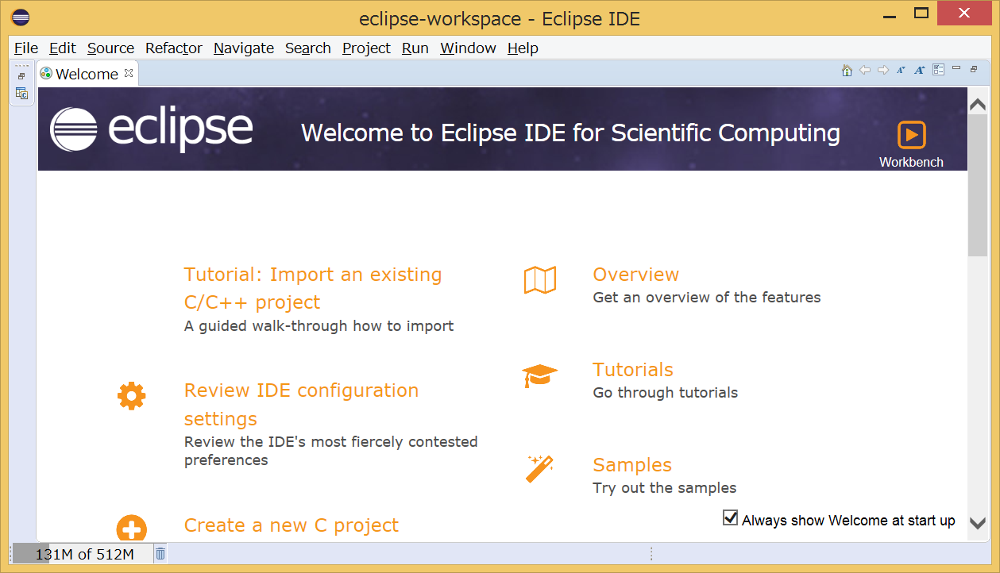
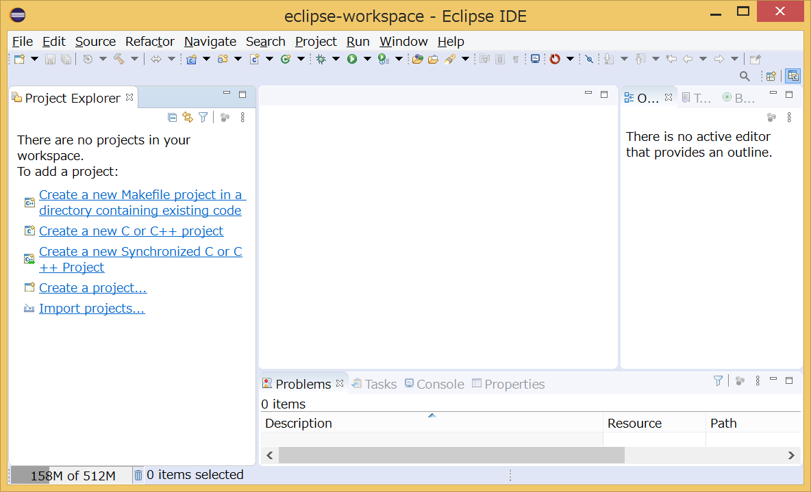
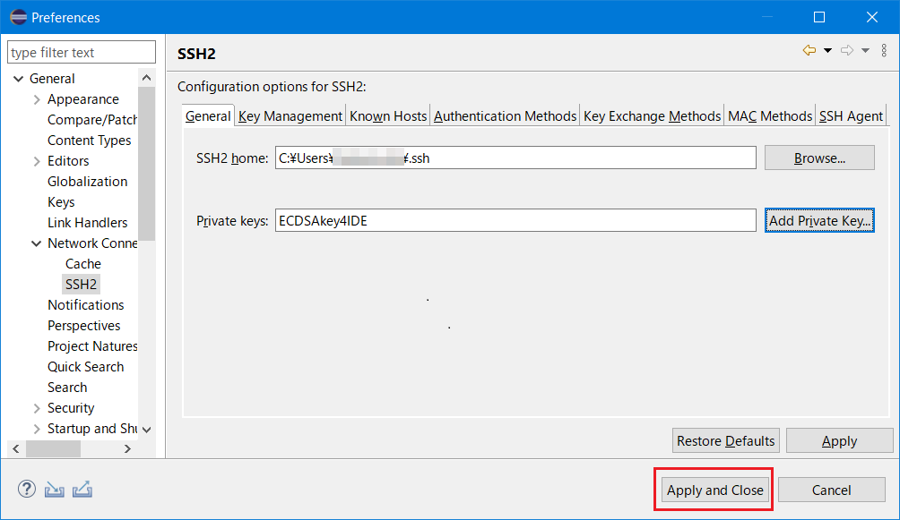
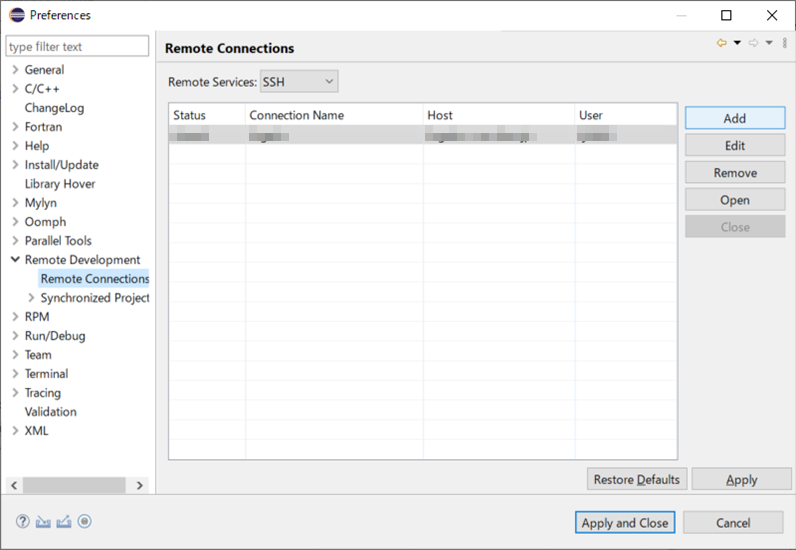
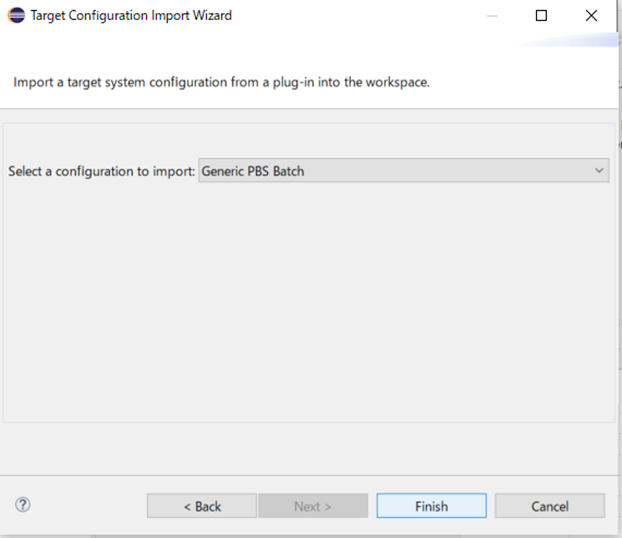
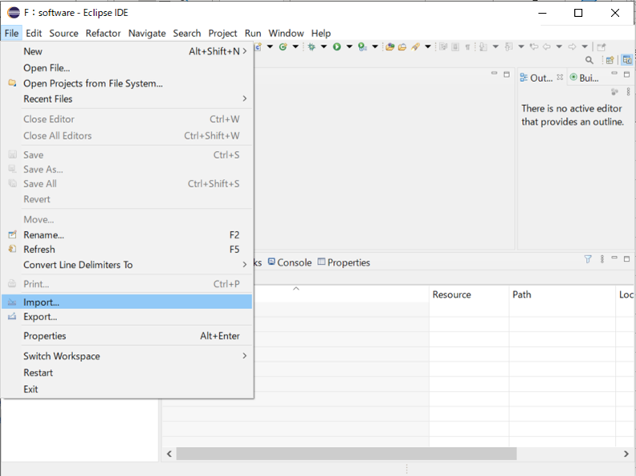
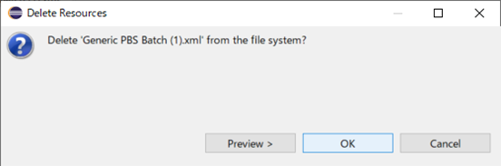
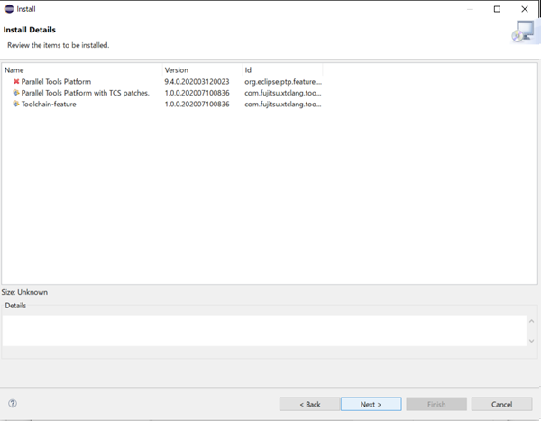
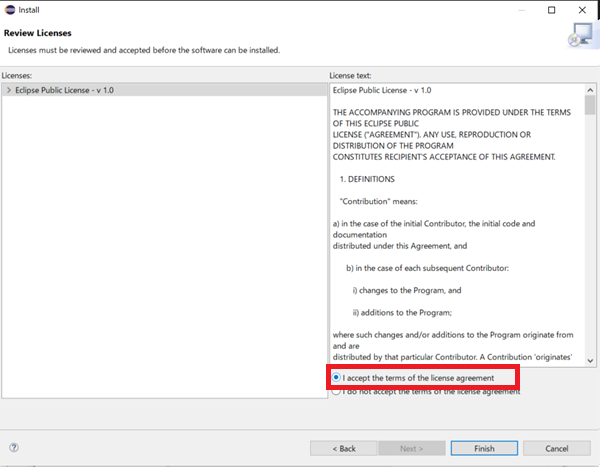
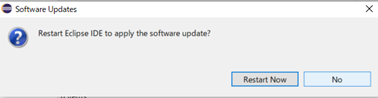

3.1.13. 統合開発環境¶
統合開発環境の機能、および、利用方法について説明します。
3.1.13.1. 概要¶
統合開発環境は、Eclipse Foundationが提供する "Eclipse IDE for Scientific Computing"パッケージと "Technical Computing Suite" に対応する拡張機能の総称です。
- "Eclipse IDE for Scientific Computing"パッケージは、以降 Eclipse と呼びます。詳細は、EclipseFoundationの公式サイト(https://www.eclipse.org)を参照してください。
"Technical Computing Suite" に対応する拡張機能は、以降 富士通拡張機能と呼びます。
富士通拡張機能を用いたビルドやジョブ投入については、マニュアル「統合開発環境使用手引書」を参照ください。
注意
本章で説明する Eclipse は、"Eclipse IDE 2020-06 R Packages" を使用しています。Eclipseのバージョンによっては手順や画面が異なる場合がありますので、適宜読み替えてください。
3.1.13.1.1. 用語説明¶
本章で使用するEclipseの用語は以下のとおりです。
詳細はEclipse の Help、Eclipse Foundation の公式サイトを参照してください。
用語 |
説明 |
|---|---|
ワークベンチ(Workbench) |
Eclipseのメイン画面全体を示します。 |
ビュー(View) |
ワークベンチ上に表示されるサブウィンドウを示します。ビューには、固有のツールバー、メニューを持つビューもあります。 |
パースペクティブ(Perspective) |
ワークベンチに表示するビューのセット、および、レイアウトを定義したものです。 |
ワークスペース(Workspace) |
ワークスペースは開発資産、および、ユーザーの作業状態を保存する場所です。ユーザーが行った作業の状態やワークベンチの設定情報などを保存します。 |
ツールチェイン(Toolchain) |
ソースコードからバイナリを生成し、エディタ、コンパイラ、アセンブラ、リンカなどで構成されるツールの集合体を指します。 |
シンクロナイズドプロジェクト(Synchronized project) |
シンクロナイズドプロジェクトは、ローカルシステムと、1つ、または、複数のリモートシステムにミラー化されたファイルから構成されます。編集はローカルシステム上で行われ、各ファイルは、変更、作成、または、削除されたタイミングでアクティブなリモートシステムと同期します。 |
3.1.13.2. 利用環境¶
[動作確認済環境]
Operation System(OS) |
Java Runtime Environment (JRE)／Java Development Kit (JDK) |
Eclipse IDE for Scientific Computing |
|---|---|---|
Microsoft Windows 11 (64bit) |
OpenJDK 8 (1.8.0.332-1) |
Eclipse IDE 2020-06 R Packages |
macOS Catalina |
OpenJDK 8 (1.8.0.332-1) |
Eclipse IDE 2020-06 R Packages |
Red Hat Enterprise Linux 8.1 |
OpenJDK 8 (1.8.0.332-1) |
Eclipse IDE 2020-06 R Packages |
注意
なお、JRE/JDKについては、使用条件(ライセンス条件)を十分に確認の上、お客様の責任において入手(https://github.com/ojdkbuild)し、ご利用ください。
3.1.13.3. 導入手順¶
統合開発環境の導入手順について説明します。
3.1.13.3.1. Eclipseの導入¶
Eclipseの導入方法を示します。
3.1.13.3.1.1. JRE または JDKのインストール¶
Eclipseを使用するためには、JRE(Java Runtime Environment)、または、JDK(Java Development Kit)が必要となるため、事前にインストールしてください。
参考
利用する Eclipse IDE に必要な JRE／JDKのバージョンについては以下を参考にしてください。
3.1.13.3.1.2. Eclipseのインストール¶
Eclipse Foundationの公式サイトより、"Eclipse IDE for Scientific Computing" を任意の場所にインストールします。
参考
インストール方法は、公式サイトから"Eclipse IDE for Scientific Computing"をダウンロードする方法と、Eclipse Installerを使用して、インストールパッケージの選択画面から "Eclipse IDE for Scientific Computing" を選択する方法があります。
詳細は、以下のEclipse Foundationの公式サイトを参照してください。
3.1.13.3.1.3. Eclipseの起動¶
インストールフォルダにある
eclipseを実行します。Eclipseが起動し、ワークスペースを指定する画面が表示されます。ワースクペースを作成したいディレクトリを、[Workspace]に指定してください。指定したディレクトリが存在しない場合は、自動で作成されます。[Workspace]を設定後、[Launch]ボタンをクリックします。

[Welcome]ビューは使用しないため、ビューを閉じてください。

初期画面が表示されます。

3.1.13.3.2. 富士通拡張機能の導入¶
富士通拡張機能の導入方法を説明します。
本作業は、Eclipse ワークスペースの新規作成時に実施してください。
3.1.13.3.2.1. ログインノードへの接続¶
ログインノードに接続する時に使用するSSHの秘密鍵はあらかじめ作成してください。 Eclipse用の鍵ペア（秘密鍵／公開鍵）の作成を参照ください。
Eclipse メニューバーから、を選択します。

[Preferences]画面の左ペインから、を選択します。ログイン用の秘密鍵をEclipseに登録します。

項目
値
SSH2 home
[Browse...]ボタンをクリックし、秘密鍵があるパスを選択します。
Private keys
[Add Private Key...]ボタンをクリックし、秘密鍵のファイル名を入力します。
注意
秘密鍵と公開鍵のペアを作成しなおした場合は、公開鍵の登録が必要です。詳しくは、利用手引書 利用およびジョブ実行編「4.4.2 公開鍵登録」を参照ください。
3．[Apply and Close] を選択します。

Eclipse メニューバーから、を選択します。
[Preferences]画面の左ペインから、を選択し、[Add]ボタンをクリックします。

[New Connection]画面に、必要な情報を設定し、[Finish]ボタンをクリックします。

[New Connection]画面の設定内容は以下のとおりです。
項目1
項目2
設定内容
Connection name
[Remote Connection]の識別名を指定します。任意の名前を指定してください。
Host information
Host
ログインノードのホスト名
login.fugaku.r-ccs.riken.jpを指定します。Host information
User
ユーザ名を指定します。
Host information
ログインノードに接続する際に使用する認証方式を選択します。
Host information
Advanced
拡張設定です。必要に応じて設定してください。
[Remote Connections]に設定した内容が追加されていることを確認します。
追加された設定を選択し、[Open]ボタンをクリックします。

Statusが、 "open" に更新された事を確認し、[Apply and Close]をクリックして画面を閉じます。

3.1.13.3.2.2. 富士通拡張機能用ファイルの配置¶
富士通拡張機能を使用するために必要なファイルを配置します。
富士通拡張機能を使用するために必要なファイルは、ログインノードの以下です。
$FJSVXTCLANGA/misc/ide/idefiles.zip注釈
$FJSVXTCLANGAには言語環境へのパスが設定されており、ログイン時に自動で設定されます。言語42版の場合は、
/opt/FJSVxtclanga/tcsds-1.2.42です。上記の zip の解凍後の構成は以下の通りです。
ディレクトリ名／ファイル名
説明
配置先
eclipsesetting
ログインノードの
/home/groupname/username/.eclipsesettings配下に配置するファイルが格納されています。ログインノード
plugins
Eclipse の plugins フォルダ内に配置するファイルが格納されています。
クライアントマシン
fj_extention
富士通拡張機能設定ファイルのインポートで使用するXMLファイルが格納されています。
クライアントマシン
[ファイルの配置方法]
以下の手順でファイルを配置します。
idefiles.zipファイルをログインノードの任意の場所に展開します。
eclipsesettingsディレクトリを.eclipsesettingsにリネームし、ログインノードの/home/groupname/username/ディレクトリ直下にコピーします。
idefiles.zipファイルをクライアントマシンに転送し、任意の場所に展開します。
3.1.13.3.2.3. 富士通拡張機能設定ファイルのインポート¶
富士通拡張機能を使用するために必要な設定ファイルをEclipseにインポートします。
[Project Explorer]ビューを表示します。[Project Explorer]ビューは、メニューバーのを選択して表示することができます。

メニューバーのを選択します。

[Import]画面の Select an import wizard から、を選択し、[Next>]ボタンをクリックします。

プルダウンメニューから、[Generic PBS Batch]を選択し、[Finish]ボタンをクリックします。

targetConfiguratonsプロジェクトの作成選択画面で、[Yes]ボタンをクリックします。

[Project Explorer]ビューに [targetConfigurations] が追加されていることを確認し、[targetConfigurations] を選択します。

メニューバーから、を選択します。

[Import]画面で、を選択し、[Next >]ボタンをクリックします。

- [From directory] 右側の [Browse...]ボタンをクリックし、富士通拡張機能用ファイルの配置で展開した
fj_extentionディレクトリを指定します。指定すると、[From directory] の下のボックスの左側に選択したディレクトリ、右側にディレクトリ内のファイルが表示されます。ここでは、ボックス右側のFUJITSU_Technical_Computing_Suite.xmlファイルにチェックを入れ、ボックス下の[Into folder]に "targetConfigrations" が指定されていることを確認します。"targetConfigrations" が指定されていない場合、右側の[Browse...]ボタンをクリックし "targetConfigrations" を選択します。設定完了後、[Finish]ボタンをクリックします。

[Project Explorer]ビューの[targetConfigurations]に、
FUJITSU_Technical_Computing_Suite.xmlが追加されていることを確認します。

[Project Explorer]ビューにある
Generic PBS Batch (1).xmlは、今後使用しないため削除します。[Project Exploler]ビューからGenericSLURM Batch (1).xmlを右クリックし、[Delete]を選択します。

確認画面で問題ないことを確認し、[OK]ボタンをクリックします。

3.1.13.3.2.4. インストールパッケージの適用¶
メニューバーの[Window]-[Preferences]を選択します。

[Preferences]から[Install/Update]を選択し、[Verify provisioning operation is compatible with currently running JRE]のチェックを外してから[Apply]ボタンをクリックします。

[Available Software Sites]を選択し、[Name]の下のチェックボックスのチェックをすべて外してから[Apply and Close]ボタンをクリックします。

注意
Eclipseにインストールされているソフトウェアのアップデートを適用しないでください。また、本節で記載しているものを除き、Eclipseに新規にソフトウェアをインストールしないでください。
メニューバーの[Help]-[Install New Software]を押します。

[Install]ウィンドウから[Add]ボタンを押します。

[Add Repository]ウィンドウに必要な情報を設定し[Add]ボタンを押します。

項目
設定内容
Name
任意の名前を指定してください。
Location
「Archive」ボタンを押し、ローカルに配置したインストールパッケージ「TCS_IDE_Plugins_YYYYMMDDhhmm.zip」を選択してください。 インストールパッケージは、富士通拡張機能用ファイルの“patches”ディレクトリの中に格納されています。
Eclipseに適用可能なソフトウェアの一覧が表示されます。[Select All]ボタンを押してすべてを選択し、[Next]ボタンを押してください。

「Update my installation to be compatible with the items being installed」を選択し、[Next]を押します。

インストール対象のソフトウェアが表示されます。「Parallel Tools PlatForm with TCS patches」と「Toolchain-feature」がインストール対象であることを確認し、[Next]ボタンを押します。

「I accept the terms of the license agreement」を選択し、[Finish]ボタンを押します。

セキュリティー警告画面が表示されます。[Install anyway] ボタンを押します。

再起動するかを尋ねられますが、[No]ボタンを押します。そして、Eclipseの右上の×ボタンを押し、Eclipseを終了します。

- ソフトウェアがEclipseに正しくインストールされたことを確認します。メニューバーの[Help]-[About Eclipse IDE]-[Installation Details]を押します。[InstalledSoftware]タブの一覧に、指定した2つのソフトウェアが含まれることを確認してください。

参考
ソフトウェアが表示されない場合は以下をお試しください。
ターミナルもしくはコマンドプロンプトから「eclipse -clean」によってEclipseを起動し、[InstalledSoftware]タブを確認ください。
3.1.13.4. Eclipse用の鍵ペア（秘密鍵／公開鍵）の作成¶
ECDSAの鍵ペア（公開鍵／秘密鍵）の作成手順を示します。puttygenを使用する場合には、ターミナルエミュレータPuTTY（パティ）を事前にインストールする必要があります。
3.1.13.4.1. ssh-keygenを利用した鍵ペアの作成¶
利用者の端末にてssh-keygenコマンドを実行し、秘密鍵と公開鍵のペアを作成します。
ターミナルを起動して、ssh-keygenコマンドを実行します。
Windowsの場合はコマンドプロンプト（）、Mac（OS X）の場合はTerminal（）を起動してssh-keygenコマンドを実行します。
UNIX／Linuxの場合は、端末エミュレータを起動して ssh-keygenコマンドを実行します。
[terminal]$ ssh-keygen -t ecdsa -b 521 -m PEM Generating public/private ecdsa key pair. Enter file in which to save the key (C:\Users\name/.ssh/id_ecdsa): Enter passphrase (empty for no passphrase): # パスフレーズを入力 Enter same passphrase again: # もう一度同じパスフレーズを入力 Your identification has been saved in C:\Users\name/.ssh/id_ecdsa. Your public key has been saved in C:\Users\name/.ssh/id_ecdsa.pub. The key fingerprint is: SHA256:fMxUePmrQnAzHlQw531SdYV+hFD0iChkVf1cuXuVEuw name@hostname The key's randomart image is: +---[ECDSA 521]---+ | o.+=B*ooO| | o o*o=+=+| | ..o.+o=+*| | ..== Eo==| | S+++ .oo| | .o ...| | . . .| | . . | | . | +----[SHA256]-----+注釈
パスフレーズはパスワード同様に他人が推測しにくい文字列を設定してください。また、必ずパスフレーズを設定するようお願い致します。パスフレーズの長さは15文字以上を推奨します。
- ssh-keygenを実行すると、ホームディレクトリ配下の
.sshディレクトリに秘密鍵（id_ed25519）と公開鍵（id_ecdsa.pub）の2種類が作成されます。公開鍵（id_ecdsa.pub）を富岳ウェブサイトを利用してログインノードに登録します。秘密鍵（id_ed25519）をEclipseに登録します。
3.1.13.4.2. PuTTYgenを使用した鍵ペアの作成¶
puttygenコマンドを実行し、秘密鍵と公開鍵のペアを作成します。
- puttygenを起動します。鍵の種類（Type of key to generate）として「ECDSA」、「nistp521」を選択し、 「Generate」ボタンをクリックします。

マウスカーソルをランダムに動かします。

- 公開鍵を保管します。「Public key for pasting in to OpenSSH authorized_keys file:」に表示される内容を、クリップボードにコピーします（メモ帳を起動し貼り付けておくことをお勧めします）。クリップボードに張り付けた内容（公開鍵となります）を、富岳ウェブサイトを利用して登録します。
「Key passphrase」および「Confirm」に、パスフレーズを入力します。入力後、「Save private key」ボタンをクリックし、秘密鍵を保管します。ここで保存するファイルは公開鍵を再確認したい場合に使用します。

注意
パスフレーズはパスワード同様に他人が推測しにくい文字列を設定してください。また、必ずパスフレーズを設定するようお願い致します。パスフレーズの長さは15文字以上を推奨します。
を選び、Eclipseで使用できる形式で秘密鍵をファイルに保存します。
秘密鍵を保管するファイル名を「ファイル名(N)」に入力し、「保存(S)」ボタンをクリックします。秘密鍵が保管されます。ここで入力したファイル名をEclipseで使用します。

{kind=link}
{kind=link}